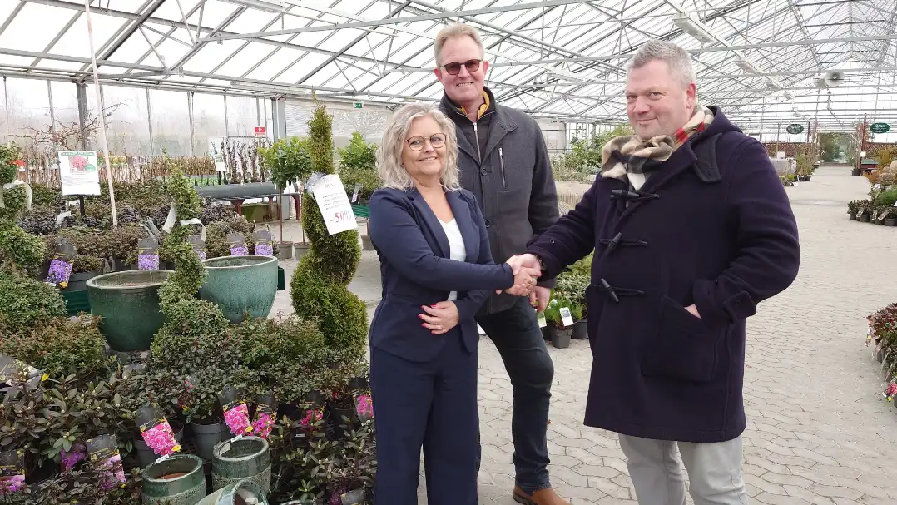

Billig blomst
Vejen til succes er tilfredse kunder, kvalitet og lave priser
Billigblomst – ’Her får du god behandling – Her er nemlig selvbetjening.

Det betyder ikke, at man ikke må kontakte personalet, men man skal ikke forvente en længere snak, et råd eller faglig vejledning, da flowet af varer i Billigblomst er ekstremt effektivt og dermed kræver, at vores medarbejdere er lige så effektive til at få varerne ind i butikken.
Vi har fart på i Billigblomst, men i alle dele af forretningen forsøger vi at arbejde ud fra vores 3 grundlæggende værdier.
Ordentlighed: Hos Billigblomst vægter vi ordentlighed højt i alle aspekter af arbejdet og på alle niveauer i forretningen. Internt skal vi agere ordentligt overfor vores kollegaer i såvel plantecentre som administration. Det vil sige, at vi værdsætter og respekterer forskelligheder, samt at vi kommunikerer både direkte og tydeligt og altid i en god tone. Eksternt skal vi agere ordentligt overfor såvel kunder som samarbejdspartnere. Selvom vi har høflig selvbetjening i alle vores plantecentre, vil vi naturligvis gerne – med et smil – være vejvisere og svare på kundernes spørgsmål i det omfang, vi kan. Overfor vores samarbejdspartnere kommunikerer vi rettidigt og med fuld gennemsigtighed – og vi stiller generelt også krav om ordentlighed hos vores samarbejdspartnere.
Fleksibilitet: Vi skal være fleksible og omstillingsparate i alle dele af forretningen. Vi skal være fleksible i forhold til vores kunder og konstant tilpasse forretningen til kundernes efterspørgsel. Vi skal være omstillingsparate og villige til at tage kontrollerede chancer for at udvikle forretningen. Vi skal være fleksible i forhold til vores interne roller, og vi værdsætter en flad organisation, hvor ingen er ”for fine” til nogle opgaver. Derfor kan du opleve vores ejer fylde varer på planteborde en lørdag morgen i plantecentret i Århus, vores administrerende direktør ændre på opstillingerne af varer i plantecentret i Hillerød eller vores økonomidirektør skubbe indkøbsvogne på en åbningsdag for ét af de nye plantecentre.
Købmandsskab: Vi skal være dygtige købmænd! Vi skal sørge for at have de rette varer til den rette pris og på det rette tidspunkt. Dette stiller store krav til alle medarbejdere involveret i køb og salg af varer – både i administrationen og i plantecentrene – i forhold til indblik i markedet, indblik i sæsonerne og indblik i kundernes behov. Vi skal opsøge alle muligheder for den gode handel, som kommer både kunderne og forretningen til gode.
Ledelse
